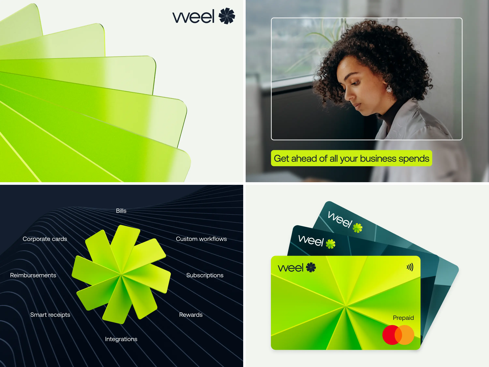

Weel
2022
Formerly known as DiviPay, Weel came to us for a brand that would reassure CFOs, delight employees and position their product as a global leading spend management solution.
Like a wheel with many spokes, Weel is made up of many features, each streamlining a different spend management process. At the core of these features is Weel’s virtual corporate card. So, we created a 3D wheel logomark made of cards which in turn inspired the entire brand system.
Weel’s brand expression is comprised of three devices based on the card; a holding device for photography and type, a cropped close-up of our logomark, and a card device that brings a particular part of an image into focus.
Brandmark Motion
